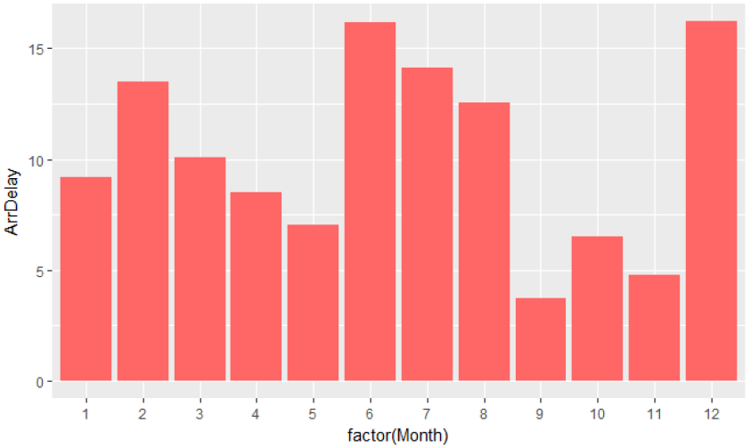
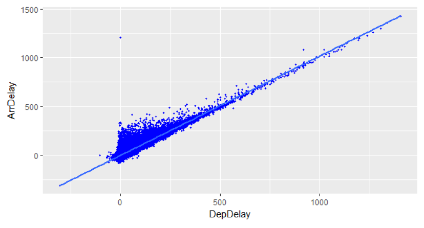
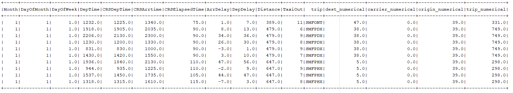
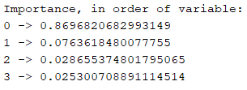
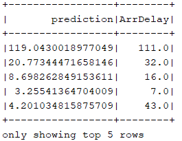
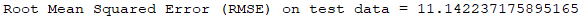

Flight Delay Prediction
Introduction
For this Project I used the data published by the US Department of Transportation related to the year 2007. This dataset is composed of 7.453.215 observations
and 29 different variables. The objective of this assignment is to develop a Spark application in order to predict the delay of commercial flights. To achieve this, I followed these steps:
- Load the input data, previously stored at a known location.
- Select, process and transform the input variables, to prepare them for training the model.
- Perform some basic analysis of each input variable.
- Validate the created a Machine Learning model and provide some measures of its accuracy.
The language chosen for the application is
Scala, and
R for initial data exploration and plotting.
The App was developed using IntelliJ as IDE and SBT as build manager.
import org.apache.log4j.{Level, Logger}
import org.apache.spark.ml.Pipeline
import org.apache.spark.ml.evaluation.RegressionEvaluator
import org.apache.spark.ml.feature.{StringIndexer, VectorAssembler, VectorIndexer}
import org.apache.spark.sql.SparkSession
import org.apache.spark.sql.functions._
import org.apache.spark.sql.types._
import org.apache.spark.ml.regression.{DecisionTreeRegressionModel, DecisionTreeRegressor, RandomForestRegressor, RandomForestRegressionModel}
First of all, I created the Spark Session. The master is set on local[*] in order to work on all the available cores. This value can be modified in order to reduce computational power needed, to the detriment of speed.
//Create Spark session
val spark = SparkSession
.builder()
.master("local[*]")
.appName("Big Data Project")
.getOrCreate()
I created the function createPartialdata(int) in order to create a reduced dataset with a customized number of lines. All the variables are casted with their correct Data Type, the null values are eliminated and the dataset is saved as a .csv file. This file will be used for initial data exploration, in order to reduce running time. Initially I generated a dataset containing 700 thousand rows (10% of the original dataset).
def createpartialData(limitation: Int) = {
var path2 = "src/main/scala/2007.csv.bz2"
var inputDF = spark.read.format("csv").option("delimiter", ",")
.option("header", "true")
.load(path2)
.select(
col("Month").cast(IntegerType),
col("DayOfMonth").cast(IntegerType),
col("DayOfWeek").cast(DoubleType),
col("DepTime").cast(DoubleType),
col("CRSDepTime").cast(StringType),
col("CRSArrtime").cast(StringType),
col("UniqueCarrier").cast(StringType),
col("CRSElapsedTime").cast(DoubleType),
col("ArrDelay").cast(DoubleType),
col("DepDelay").cast(DoubleType),
col("Origin").cast(StringType),
col("Dest").cast(StringType),
col("Distance").cast(DoubleType),
col("Cancelled").cast(IntegerType),
col("TaxiOut").cast(IntegerType))
var real_data1 = inputDF.na.drop()
var onepiece = real_data1.select("*").limit(limitation)
onepiece.write.option("header", "true").csv("src/main/scala/partialdata_" + limitation.toString + ".csv")
Data exploration
The ordinal variables Month, DayOfWeek and DayOfMonth were not concatenated to generate complete dates, but were handled separately. This choice allows to better detect patterns during specific days or months. Indeed, the following R histogram plot representing the average delay per month shows a significant difference in the average delay depending on the month:

An initial analysis is performed on selected variables, specifically the linear correlation between DepDelay and ArrDelay is studied and plotted in R. The correlation is 0.92, and represents the highest correlation among all the variables, as shown below.

Further correlations are computed with the hetcor() function provided in R, which guarantees reliable results with categorical and nominal variables. To perform these operations, I used a Dataframe containing a partial data of 1 million rows. In order to improve the selection of the most relevant variables, it's possible to generate a Random Forest Model and then use the function featureImportances() provided in spark.ml.regression.RandomForestRegressionModel to assess the choice of variables. This allows to obtain a vector representing the importance of every variable used in the Random Forest regressor. This function generalizes the Gini impurity index, producing a float value per variable in the range of 0-1.
Data selection and creation of new variables
The dataset is loaded as a Spark DataFrame. The variables are casted with their correct DataType.
var inputDF = spark.read.format("csv").option("delimiter", ",")
.option("header", "true")
.load(path)
.select(
col("Month").cast(IntegerType),
col("DayOfMonth").cast(IntegerType),
col("DayOfWeek").cast(DoubleType),
col("DepTime").cast(DoubleType),
col("CRSDepTime").cast(DoubleType),
col("CRSArrtime").cast(DoubleType),
col("UniqueCarrier").cast(StringType),
col("CRSElapsedTime").cast(DoubleType),
col("ArrDelay").cast(DoubleType),
col("DepDelay").cast(DoubleType),
col("Origin").cast(StringType),
col("Dest").cast(StringType),
col("Distance").cast(DoubleType),
col("Cancelled").cast(IntegerType),
col("TaxiOut").cast(IntegerType))
A new variable, containing the Origin and the Destination, is created in the column
trip. This categorical variable helps to identify the categories of unique combination between Origins and Destinies. For example:
SMF (Origin) + SAN (Dest) = SMFSAN (Trip)
//Create variable trip, concatenating Origin and Dest
real_data1 = real_data1.withColumn("trip", concat(real_data1.col("Origin"), real_data1.col("Dest")))
The categorical variables UniqueCarrier, Dest and Origin are casted as StringType. Since the
Random Forest algorithm, as well as the Linear Regression, do not handle the String type, those
variables were converted and indexed to type Double. This operation was performed creating a new
StringIndexer object, in order to fit and transform the original DataFrame.
//Index the variable Dest into integer values, creating a new variable: dest_numerical
var indexer2 = new StringIndexer().setInputCol("Dest").setOutputCol("dest_numerical")
real_data1 = indexer2.fit(real_data1).transform(real_data1).drop("Dest")
//Index the variable UniqueCarrier into integer values, creating a new variable: carrier_numerical
var indexer4 = new StringIndexer().setInputCol("UniqueCarrier").setOutputCol("carrier_numerical")
real_data1 = indexer4.fit(real_data1).transform(real_data1).drop("UniqueCarrier")
//Index the variable Origin into integer values, creating a new variable: origin_numerical
var indexer3 = new StringIndexer().setInputCol("Origin").setOutputCol("origin_numerical")
real_data1 = indexer3.fit(real_data1).transform(real_data1).drop("Origin")
//Index the variable Origin into integer values, creating a new variable: trip_numerical
var indexer5 = new StringIndexer().setInputCol("trip").setOutputCol("trip_numerical")
real_data1 = indexer5.fit(real_data1).transform(real_data1)
real_data1.createOrReplaceTempView("real_data1")
println("The complete Dataset, after transformation and creation of new variables: ")
real_data1.show(10)

The final variables selected, after pre-processing and data exploration, are DepDelay, TaxiOut, CRSDepTime, DepTime. An object VectorAssembler is generated, to create a column containing a vector with all the features per instance. This column will be used later as input for a VectorIndexer.
//Create a vector assembler, to generate the input for the Vector Indexer, and print the variables used
var array = Array("DepDelay", "TaxiOut", "CRSDepTime", "DepTime")
var vectorAssembler = new VectorAssembler()
.setInputCols(array)
.setOutputCol("features")
val assemblerData = vectorAssembler.transform(real_data1)
println("The variables used are: ")
array.foreach(x => print(x + " "))
println()
The object VectorIndexer receives as input the column of features generated by the previous VectorAssembler, and returns as output a column with the indexed features. This is necessary for the Random Forest model. To validate the model generated I randomly split the dataset in a training set (75% of the original dataset) and a test set (25%). The prediction model was created using ArrDelay as the target variable, The depth of the trees, which is 4 as default, was increased up to 7 (RMSE = 11,6) and 9 (RMSE = 11.07), resulting in a better accuracy to the detriment of the running time. The number of trees are 20 as default. In order to implement the indexed categories Dest, Origin and Trip I initially increased the maximum number of categories of the model to 5032, as well as the number of bins. This operation allows the algorithm to consider every variable with a number of distinct values lower than 5032 to be considered categorical. This number was chosen because it’s the number of different distinct values present in Trip. At the end, this setting did not improve the final accuracy, so it was discarded and the maximum number of bins was set at 700.
// RANDOM FOREST
//Creating a Vector Indexer to generate the input for the Random Forest model
val indexer = new VectorIndexer()
.setInputCol("features")
.setOutputCol("indexedFeatures")
val indexerModel = indexer.fit(assemblerData)
// Create new column "indexedData" with categorical values transformed to indices
val indexedData = indexerModel.transform(assemblerData)
//Splitting the dataset in training and test set
val split = indexedData.randomSplit(Array(0.75, 0.25))
var training = split(0)
var test = split(1)
//Setting the Random Forest regressor
val rf = new RandomForestRegressor()
.setLabelCol("ArrDelay")
.setFeaturesCol("features")
.setMaxDepth(9)
.setMaxBins(700)
.setFeatureSubsetStrategy("auto")
// Chain indexer and forest in a Pipeline.
val pipeline = new Pipeline()
.setStages(Array(rf))
// Train model. This also runs the indexer.
val model = pipeline.fit(training)
The function featureImportances() provided in Spark.ml.regression.RandomForestRegressionModel assesses the choice of variables, obtaining a vector representing the importance of every variable used
in the Random Forest regressor. This function generalizes the Gini impurity index, producing a
float value per variable in the range of 0-1. The importance of the variables is shown below. The variable 0, related to DepDelay presents the highest correlation, as intuition might suggests.Indeed, if a departure is delayed, the arrival will be probably delayed as well.
//Calculating and printing the importance of every variable used
val importance = model.stages(0).asInstanceOf[RandomForestRegressionModel].featureImportances
println("Importance, in order of variable: ")
importance.toArray.zipWithIndex
.map(_.swap)
.sortBy(-_._2)
.foreach(x => println(x._1 + " -> " + x._2))

Predictions are then computed, based on the model. The result is printed below:
// Make predictions.
var predictions = model.transform(test)
// Select example rows to display.
println("Prediction table: ")
predictions.select("prediction", "ArrDelay").show(5)

As measure of the algorithm efficiency, the root-mean-square error (RMSE) was calculated. The result, using as input variables DepDelay, TaxiOut, CRSDepTime and DepTime, with a depth of trees equal to 9 and the maximum number of bins equal to 700, is 11.07. This means that this model predicts the delay of a Flight, given the 4 variables overmentioned, with an average error of 11 minutes.
//Evaluating the accuracy using RMSE
val evaluator = new RegressionEvaluator()
.setLabelCol("ArrDelay")
.setPredictionCol("prediction")
.setMetricName("rmse")
val rmse = evaluator.evaluate(predictions)
println()
println("Root Mean Squared Error (RMSE) on test data = " + rmse)
